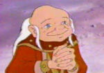
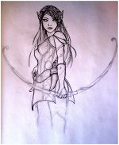

Master
 De: La Frikipedia, la enciclopedia extremadamente seria.
De: La Frikipedia, la enciclopedia extremadamente seria.
Master es el termino generico que designa al dios de los seguidores de la roligion. El Gran DJ (Dador de juicio o Master) persiguira asta el fin de los tiempos a los PJs (Pendientes de Juicio)para hacer pagar sus indulgencias.
Perfil del Master
Los Master tienes tres carácteristicas comunes, conocidas como La Triple S:

|
Un Master de de ser Sereno. Sabe a ciencia cierta lo que ocurrirá, puesto que él es el creador del mundo, el tejedor del destino y el juez de los muertos. Nada le pilla por sorpresa, nada le incomoda, nada le altera. El final de la historia es siempre el mismo
|

|
| La Serenidad del Master, La Triple S
|
|
|
Un Master debe ser Sarcástico. Debe de saber llevar a los PJ como si de perros con correa se tratasen. Su Palabra influye en el mundo, y el engaño es su mejor arma. No obligues a los PJ a morir, engañalos para que mueran. Usa siempre el doble sentido de las frases y manipula en juego a tu antojo
|
|
| El Sarcasmo del Master, La Triple S
|
|
|
Un Master debe de ser Seguro . El conoce las reglas y leyes una por una, por lo que no hay nada que no sea como él diga. Las leyes están para cumplirlas y la palabra del Master es la Ley. Todo es como tu digas y no debes dudar de ello
|
|
| La Seguridad del Master, La Triple S
|
Poderes del Master
 Pokemonización del Master común
PNJs (peenejotas)
Los PNJs son la voz y la influencia de Master en el juego. Ellos son los encargados de dar problemas a los PJs aventureros cuyo fin es dominar el mundo. Son, ante todo, seres prescindibles; cuya única misión en su vida es molestar todo los posible a los PJ. Existen varios tipos de PNJ
PNJ Común
Los PNJ comunes son los que, según la doctrina de la roligión descienden de Guirigaías. Hay tres tipos:
- PNJs-Guardianes: representan la nobleza y la clase alta del mundo. Son los más poderosos del mundo y el malo final suele ser de esta clase. Aún siendo los más poderosos y ricos del mundo, siempre lucharán ellos directamente y nunca contrataran a otros para hacer sus encargos.
- PNJs-Misioneros: representan la clase media del mundo. Su misión es encargar tareas o encargo a los PJ para que estos estén ocupados dando vueltas por el mundo y asi no puedan dominarlo. Suelen ser gente con dinero que creen que puede comprarse todo con el mismo
- PNJs-Currantes: representan la clase obrera del mundo. Son los comerciantes, taberneros, herreros, agricultores... Su relatividad en el mundo consiste en proporcionar materiales y alimentos a los PJ (de mayor o menor calidad) e intentar "sustraerles" el mayor dinero posible.
- PNJs-relleno o extras: cualquier personaje no oficial que suele morir en una tarde y que estvo ahí para intentar mostrar su inexistente valía o conquistar al orco o enano del grupo siendo algo cercano a un gay acosador (de raza indefinida, así como su género) que fastidia con sus "cualidades" a los PJs
PNJ de Master ó PM
 Típico Personaje del Master. Con habilidades impresionantes y...una...perso...na...li...da...d... hipn...o...ti...zanteee
El PM (Personaje del Master, y/o policia militar del juego) es el Avatar del Master dentro del juego. Suele ser un PJ bajo el control directo del Master. Este Avatar posee control total sobre el mundo, sus poderes son ilimitados y sus habilidades infinitas. Suele sacar de quicio a los PJ demostrandoles día a día su superioridad ante ellos.
Suele ser invulnerable a las emboscadas y traiciones de los PJs y se anexa a cualquier otro poder del master (véase después) para sobrevivir de la forma más inconcebible que sea posible a los cataclismo rompe alma que impone el dios...
El... "Yo soy el master!!!"
Esta habilidad es desenvainada cada vez que el Master se manda una cagada un error o pone en duda su sapiencia de las reglas, logrando lavar el cerebro de los PJs y conseguir sus oscuros objetivos.
Este poder suele atribuirse a la ascendencia de los master que se remonta a las academias JEiDI de la tierra media... ?????
En general esta frase suele arreglar confrontaciones ideológicas de las batallas , las peleas por el orden de uso de la play, el orden en la fila para el baño, la preferencia para comprar material de Rol oficial limitado, cediendo al Master su supremacía ante los tristemente célebres PJs
Aliento de dados
suele pasar que tu caballero nivel 17 alcanza un nivel de poder tan desorbitante que no hay Dragón o incluso Master que se le oponga, dadas estas circunstancias y una vez por encuentro, el DM puede soltar un XdZ de ataque y daño a ese personaje, donde X es el nivel de empute anojo odio desagrado que le genera al supremo, y Z es el dado de la justicia utilizado para este martillazo gargantuesco desde el cielo, o desde un pequeño murciélago nivel 30 con poderes Psiónicos y bendito por un díos...
Pantalla del Master
Detras de este objeto de enormes poderes se esconde el Master para desarrollar terribles planes y hacer trampa si hace falta para podermantener su hegemonía y autoridad ante el equipo, además esta pantalla raya la diferencia terrena entre los territorios mundanos de los PJs y el santuario de flagelamiento de dados y maldad del DM
Clases de Master
- Máster asesino: Se caracteriza fundamentalmente por incluir bosques con cientos de dragones que te cagas que hacen que los PJs tengan que salir por patas a casa de sus papás si no quieren acabar como un cochinillo en Segovia. Lo malo es que hará que en casa de los papá también haya dragones.
- Máster "soy mejor que tu": Su característica fundamental es la de incluir a un supervillano que sea su propio Avatar, y que por tanto, es indestructible. Su única ambición es hacer quedar a los PJs como a pringaos sin talento, seguramente porque son masoquistas y desean ser linchados al acabar la partida.
- Máster psicótico: Su único objetivo es hacer que los PJs desconfíen los unos de los otros para:
- Que se maten entre ellos en el juego (lo cual le hace sentirse poderoso)
- De forma secundaria, lograr enemistar a todos sus jugadores para convertirse en el mejor amigo de todos ellos y aprovecharse de sus recursos económicos.
- Master de fluidos corporales: Suele incluir en sus descripciones y acciones muchas cantidades, enormes cantidades, grotescas, obscenas cantidades de fluidos corporales de todo tipo y origen, tanto de los PJ`s o PNJ`s, logrando pringar las imaginaciones de sus compañeros hasta ponerles la merienda saludando por la faringe...
- Drama Master: Aquel que salta si su personaje salta, que les grita e incluso golpea a sus jugadores deseando que ambos se encarnen apropiadamente en sus roles, uno como un dragón de 5 pisos de altura y un Mediano (halfling, hobbit, frodo, raza pseudogay y peluda) armado con una daga que brilla cuando te vas a morir, escondidos en una profunda cueva sin escapatoria, plenamente iluminada por la daga...
Nombres alternativos de Master
- Naitsabes (no podía ser de otra manera)
- Camarada Diox
- Diox
- DM (se pronuncia "dummm")
- DJ
- Director del Juego (nombre pseudofresa)
- h1j* e` tu ******* madre
- oh!! Master
- dumi
- Señor...
- cuñado (si tienes una hermana wena, no en caso contrario)
- Señor Notario
- SN (eseene)
- Ilubsante
- Ilubitar
- Todo poderoso
- Niñera
- Cualquier otra palabra que denote que te rindes ante su voluntad...
Ver también
- Roligión — Doctrina religiosa de los jugadores de rol
- Rol - El origen de todo este mal
- PJ- El friki que en cuestión practicante de este mal
- Dungeons and Dragons -doctrina clásica de la roligión
- Chica friki, creiste que no existian??
Autor(es):
- JacintoCanek
- Aque
- Roms
- Nm3sS
- Azulejos
- Lleldorin
- Naitsabes
- Dark temptation
- Diegomoral
- Helloombark
Frikipedia 2005-2016, Licencia
GFDL 1.2 - Extraído por FrikiLeaks